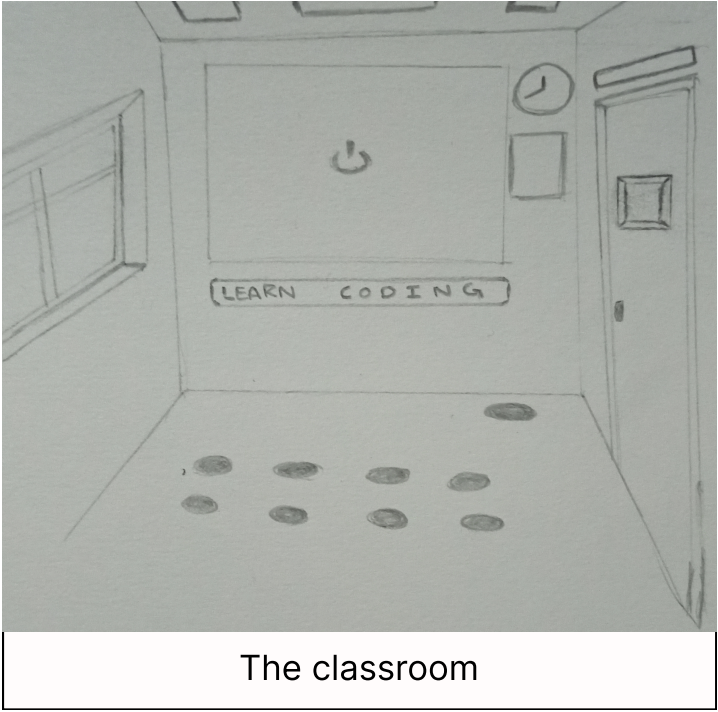
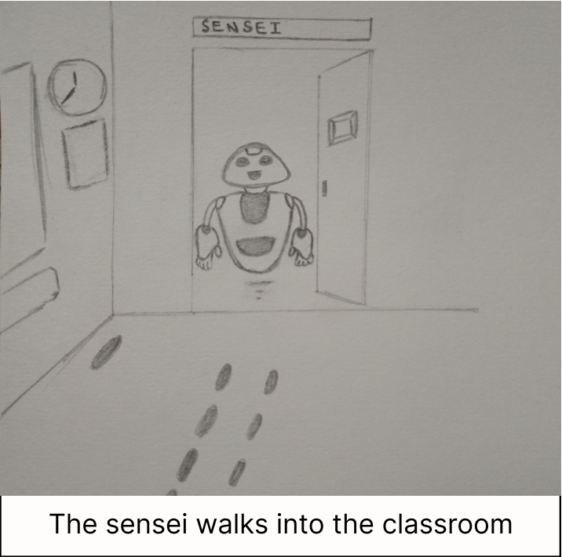
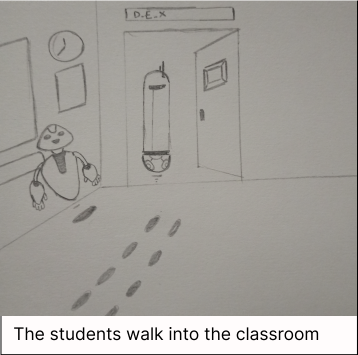
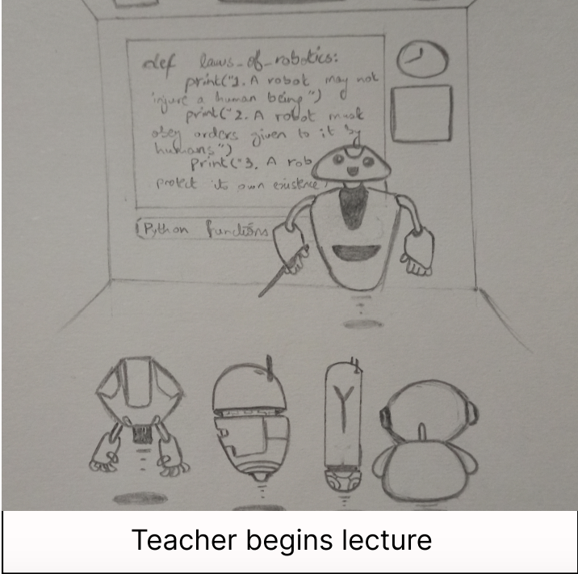
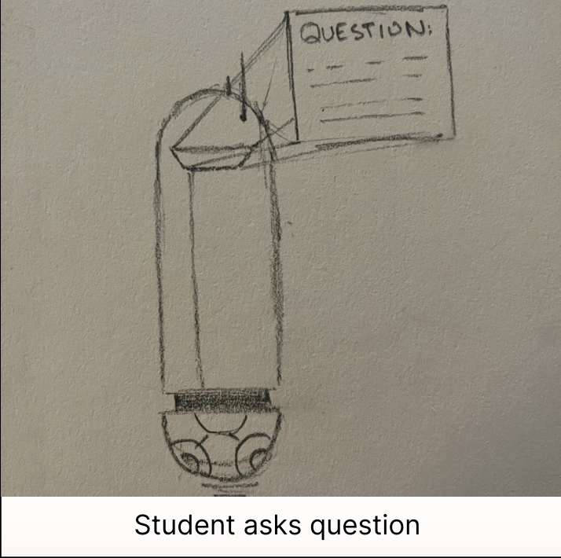
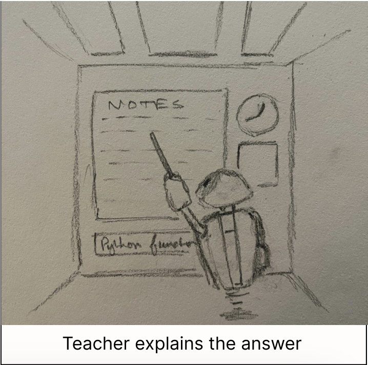

COMP-4500/8500 3D Animation Project
Group Members: Zainab Latif, Hamza Baig, Ameya Ade, and Abhishek Yawalkar
REQUIREMENTS:
-
A storyboard consisting of half a dozen to a dozen (hand-drawn) key
frames and an explanation of the action, including timing estimations
for the shots.
- A list itemizing the tasks to be done and a tentative timeline.
- Distribution/Assignment of tasks among group members.
-
Milestones needed to complete the project and a timetable for getting
them done.
-
Thoughts on how you will be able to complete the project within given
time.
Project Story:
A robot teaching coding to smaller robots
- Robots walk/hover in to take a seat
- Robots sign in
- Starts the lecture (teacher could ‘print’ on board with laser)
- Robot asks question
- Teacher clarifies
COMPONENTS: Characters (students and teacher) Props (blackboard/projector,
desks, chairs Scene (classroom, lighting)
Story-Board:
A robot teaching coding to smaller robots






Tasks to be done and a tentative timeline
- Final Storyboard – January 30
- Designing Characters – January 30
- Modeling Characters – February 8
- Designing Scene – January 30
- Modelling Scene – February 8
- Designing Props – January 30
- Modeling Props – February 10
- Simple Movement Animation – February 10
- Animation – March 20
- Script/voiceovers – March 15
- Review draft – March 20
- Final Animation – March 30
Distribution/Assignment of tasks among group members.
- Creating storyboard - Hamza, Zainab
- Updating webpage - Ameya
- Design models - one each
- Creating models
- 4 Students - one each
- 1 Teacher - contribute together
- Creating scenes
- Classroom (room, lighting) - Ameya, Abhishek
- Creating props
- board/projector to display slides – Zainab
- Pointer to go over the slides - Hamza
- Finalizing scripts - Hamza
- Voiceover - https://freetts.com/ - Abhishek
- Animation - contribute together
Milestones needed to complete the project and a timetable for getting them
done.
-
Final storyboard and animation - the timing of the scenes should be
completely nailed down, so you know the length of each piece down to the
number of frames.
- Creating basic models of the objects to be used in the animation
-
Scenes showing camera positions and model placement in several frames of
the animation - February 10
- Final models of characters
- Computation times for sample scenes in the animation.
-
Few fully rendered scenes with different camera positions and model
placements - March 10
- Final Presentation
- Story writeup, complete storyboard